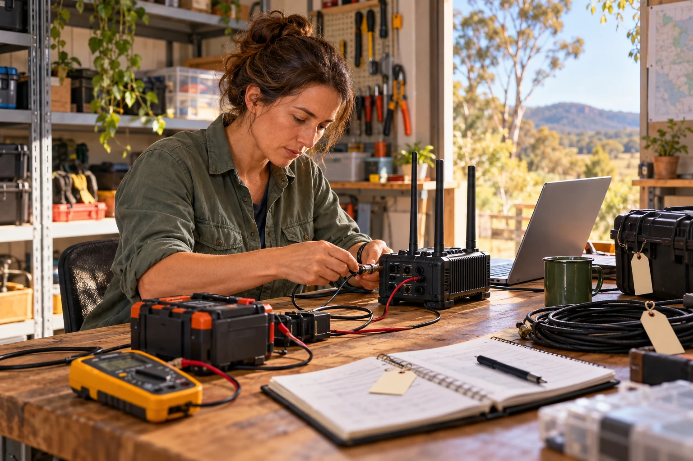

Three forms to investigate.
A public kiosk complements phones, printed material and human assistance. It gives someone a way into a checked notice, agreed service information or a short learning task. A personal Aura uses its own storage and privacy arrangements.
| Form | Purpose to explore |
|---|---|
| Sheltered demonstrator | Try complete journeys with people and sample records in a manageable setting. |
| Fixed outdoor installation | Investigate actual exposure, approach, readability, security, heat and maintenance at a proposed site. |
| Portable continuity kit | Restore an agreed information and communication function when a usual location is unavailable. |
Drawings and component choices are proposals. A safe, accessible site, maintenance cover and measured equipment performance develop through the relevant owners and qualified people. [P6]
Continuity is a complete service question.
Solar, batteries, grid power, communications and local computing each have a role to examine. A power label alone gives little evidence about the whole service. Testing records the actual loads, useful functions, environment, restoration process and duration observed.
A low-energy state might preserve a smaller agreed service. It needs readable information about what remains available, what is stored and what awaits an outside connection. A site becoming unsafe also needs an agreed alternative route, rather than an assumption that every kiosk stays accessible.

Luke’s firsthand Cyclone Alfred account is five to nine days without grid power depending on location, including nine days at Myora Caravan Park. This is identified as a personal account. It motivates the question of prolonged continuity without establishing an official area-wide outage measurement. [P1]
Keep kinds of evidence separate.
The first practical exercise is proposed over two to three days. A computer model may simulate a much longer disruption. Simulated duration, computer runtime, bench measurements and real field endurance are different evidence and are recorded separately.
Engineering also examines weather exposure, thermal behaviour, power protection, supported communications, accessibility, repair access, replenishment and replacement. The service only claims the conditions and functions actually demonstrated.
Installing the Missing Middle adds a useful future question about local compute, useful heat, backup power and equipment renewal. Its proposed connection would need the same site-specific engineering and service tests.